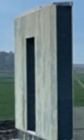

SIP (Struktūrinės izoliacinės plokštės) skydų gamybos technologija turi tam tikrų ypatumų. Šiuos skydus sudaro trys sluoksniai: dvi patvarios fibrolito arba fibrocementinės plokštės ir tarp jų presuojant įklijuota itin efektyvi šiltinamoji polistireninio putplasčio plokštė. Šis šiltinamasis sluoksnis pagal techninius šilumos rodiklius yra pranašesnis už daugelį kitų medžiagų. Sluoksniams suklijuoti naudojami poliuretaniniai klijai. Naudojamos plokštės suteikia skydams išskirtinio patvarumo, o polistireninis putplastis - puikių šilumos ir garso izoliacinių savybių.
Laikanti konstrukcija - SIP plokštės, medinis karkasas. Kompozitinė plokštė Green Board ir polistireninis putplastis „Neoporas“. Perdenginys, pagrindo ir stogo konstrukcija - kombinuotos medinės sijos SIP plokščių kevale. Kevalinė pastato struktūra užtikrina konstrukcinį stabilumą, sandarumą ir tolygų apkrovų ir įražų pasiskirstymą. Pastato konstrukcijų energinio naudingumo charakteristikos atitinka A++ klasę. Pilnai išvengiama šalčio tiltelių.
Pagal SIP technologiją statomam namui nereikalingi tradiciniai pamatai. Kevalinės konstrukcijos dėka svoris pasiskirsto tolygiai, nėra koncentruotų apkrovų. Kadangi naudojamos medžiagos - mažo svorio, namas nenusėda, todėl gali būti statomas ant sutankinto pagrindo. Tokių pamatų privalumas - aukštas patvarumas ir maža kaina. Namai iš SIP konstrukcijų išsiskiria itin lygiu sienų ir kampų paviršiumi, todėl jų apdaila ypač paprasta. Pačios namų iš SIP konstrukcijos turi pakankamą šiluminę varžą, todėl nereikia papildomai apšildyti namo sienų. Namai iš SIP konstrukcijų išsiskiria 12 proc. didesniu naudingu plotu nei kiti tokių pat matmenų namai, kadangi sutaupoma naudingo ploto dėl plonesnių sienų.
